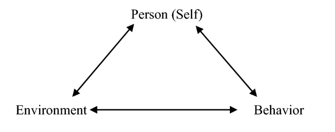
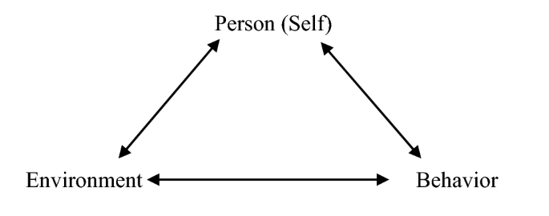

Social Cognitive Theory on Psychological Debates
The concept of Self-efficacy cannot be understood if it is not revised by the role that has on Bandura’s Social Cognitive Theory. This theory emerged to discuss behaviorist and computationalist psychological approaches to studying the human mind and learning process. In particular, this theory tried to focus on the human agency, which the other two currents of thought dealt with reductionism.
Learning has always been a debate in psychological theory. In the discipline’s early stages, the foundational principles embraced an input-output model of learning. The mechanism that the mind presents was not relevant for the empirical positivistic perspective in the behaviorist current; the objective of psychology was reduced to studying action-reaction phenomena of human behavior. Behind this state, there was an assumption that the mind was a mechanical device, where the stimulations are received invariantly, so the input determines the subject’s response.
When computational thinking started to grow in the second decade of the XX Century, the mind started to be represented as an internal circuit with cognitive operations. As computers, the mind performs complex operations to process information and give solutions to problems presented (inputs). In this way, the mind is a computer operating by pre-ordered rules saved in the neurological network (or hardware). A “throughput” was added to the mind in this second case. The behavioral decisions were now oriented by a process. The multifactorial dynamic throughput computationalist position doesn’t give space for intention or will; opens the mind to learn about problems and make changes in the solution-making process, but it’s a hiper-cognitive approach, which cannot explain decisions by affections, emotions, or imagination.
For both perspectives, behaviorists and computationalists, human agency is not present because, to assume agency, there has to be consciousness. The conscience supposes a self-generated purpose in the action. This contemplates not only cognitive operations but also a sense of life of the subject. Bandura’s intention of SCT was to not reduce the conscience activity to an epiphenomenal product of a sub-personal level, either neurological-cognitive aspects or subconsciousness desires. Bandura’s work tried not to ignore human prime features in psychology, such as subjectivity, deliberative self-guidance, and reflective self-reactiveness (Bandura, 2001).
Then, a definition of SCT can be given: “Consciousness cannot be reduced to a non-functional by-product of the output of a mental process realized mechanical at a non-consciousness lower level”. People act on beliefs, goals, aspirations, and expectations, which are not fully explained by brain or environmental activity. People are agents of experience rather than simply undergoing their experience. We give meaning, direction and satisfaction to our lives. The point is that the consciousness elements can also change the brain and the environment, so they are not epiphenomenal issues. Neurons are plastic to our thinking. We are not only exposed to stimulation, but we agenting acting to it (Bandura, 2001).
This agentic perspective fosters a line of research to provide new insights into the social construction of the human brain. Our functional structure changes through our interactions and thoughts. The claim is to “bio-psycho-socialized” the human development. In SCT the mind is not an aggregate of environment or brain. Have emergent properties. The human mind is generative, not reactive. So there’s a double direction of complementation: By one way, integer human intentionality to behavior, for the other, try to limit sociostructural factors and see how it links with psychological mechanisms to produce behavioral effect. This is how Bandura arrives at the Triadical reciprocal causation model of action, where personal/internal factors (organic or mind-intended), Environmental influences and Behavioural patterns have bi-directional mutual determinations between them.

The Elements of Human Agency
How can the human being’s agentic properties be determined? Bandura gives some definitions. An agentic act is one that is done intentionally, with a representation of a future course of action to be performed. The intention enables the power to direct and plan actions to achieve the intended outcomes. In that way, to portray agency, the actors have to be aware of the consequences of their actions (Bandura, 1982).
The human agency is composed of three elements: Forethought, Self-reactiveness (out-oriented –>), and Self-reflectiveness (<– in-oriented).
Forethought: It’s the temporal extension of agency that goes beyond forward-directed planning. Through this exercise, people motivate themselves and guide their actions in anticipation of future events. This forethought, projected for a long-term perspective, gives direction, meaning, and coherence to one’s life. In simple terms, the ability to bring anticipated outcomes to bear on current activities promotes foresight behavior. It enables people to transcend the immediate environment and fit the present into the future.
Self-Reactiveness: An agent is not only a forethinker. They need motivation and self-regulation, too. Agency involves the deliberative ability to make choices, but also to give shape to appropriate courses of action and to motivate and regulate those actions. This is the reactiveness dimension. Refer to mechanisms that regulate motivation, affect, and action by self-referent subfunctions.
Self-Reflectiveness: Ability to self-examine own functioning. The meta-cognitive capability to reflect upon oneself and adecquate one’s thoughts and actions. Within this element, people evaluate their motivation, values, and meaning of life purposes. It’s to think about our thoughts.
1.1 Social Cognitive Theory on Psychological Debates
The concept of Self-efficacy cannot be understood if it is not revised by the role that has on Bandura’s Social Cognitive Theory1. This theory emerged to discuss behaviorist and computationalist psychological approaches to studying the human mind and learning process. In particular, this theory tried to focus on the human agency, which the other two currents of thought dealt with reductionism.
Learning has always been a debate in psychological theory. In the discipline’s early stages, the foundational principles embraced an input-output model of learning. The mechanism that the mind presents was not relevant for the empirical positivistic perspective in the behaviorist current; the objective of psychology was reduced to studying action-reaction phenomena of human behavior. Behind this state, there was an assumption that the mind was a mechanical device, where the stimulations are received invariantly, so the input determines the subject’s response.
When computational thinking started to grow in the second decade of the XX Century, the mind started to be represented as an internal circuit with cognitive operations. As computers, the mind performs complex operations to process information and give solutions to problems presented (inputs). In this way, the mind is a computer operating by pre-ordered rules saved in the neurological network (or hardware). A “throughput” was added to the mind in this second case. The behavioral decisions were now oriented by a process. The multifactorial dynamic throughput computationalist position doesn’t give space for intention or will; opens the mind to learn about problems and make changes in the solution-making process, but it’s a hiper-cognitive approach, which cannot explain decisions by affections, emotions, or imagination.
For both perspectives, behaviorists and computationalists, human agency is not present because, to assume agency, there has to be consciousness. The conscience supposes a self-generated purpose in the action. This contemplates not only cognitive operations but also a sense of life of the subject. Bandura’s intention of SCT was to not reduce the conscience activity to an epiphenomenal product of a sub-personal level, either neurological-cognitive aspects or subconsciousness desires. Bandura’s work tried not to ignore human prime features in psychology, such as subjectivity, deliberative self-guidance, and reflective self-reactiveness (Bandura, 2001).
Then, a definition of SCT can be given: “Consciousness cannot be reduced to a non-functional by-product of the output of a mental process realized mechanical at a non-consciousness lower level”. People act on beliefs, goals, aspirations, and expectations, which are not fully explained by brain or environmental activity. People are agents of experience rather than simply undergoing their experience. We give meaning, direction and satisfaction to our lives. The point is that the consciousness elements can also change the brain and the environment, so they are not epiphenomenal issues. Neurons are plastic to our thinking. We are not only exposed to stimulation, but we agenting acting to it (Bandura, 2001).
This agentic perspective fosters a line of research to provide new insights into the social construction of the human brain. Our functional structure changes through our interactions and thoughts. The claim is to “bio-psycho-socialized” the human development. In SCT the mind is not an aggregate of environment or brain. Have emergent properties. The human mind is generative, not reactive. So there’s a double direction of complementation: By one way, integer human intentionality to behavior, for the other, try to limit sociostructural factors and see how it links with psychological mechanisms to produce behavioral effect. This is how Bandura arrives at the Triadical reciprocal causation model of action, where personal/internal factors (organic or mind-intended), Environmental influences and Behavioural patterns have bi-directional mutual determinations between them.
